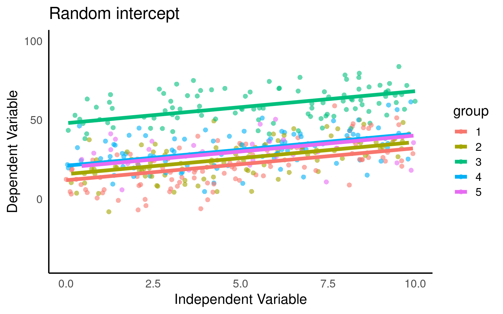
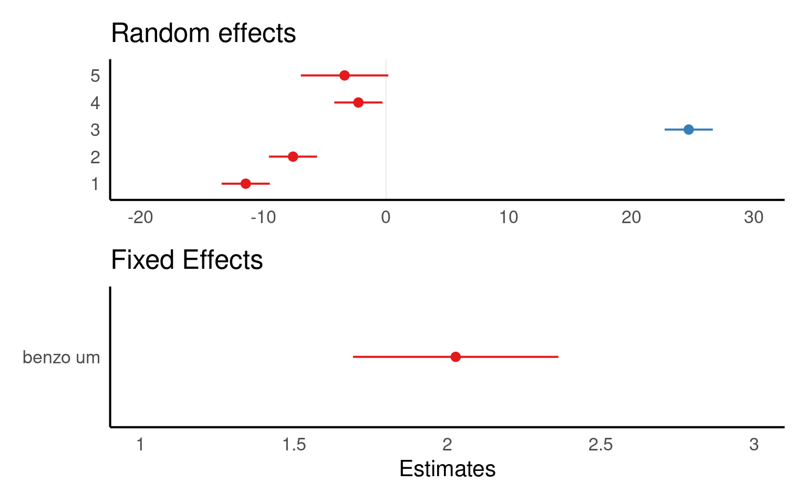
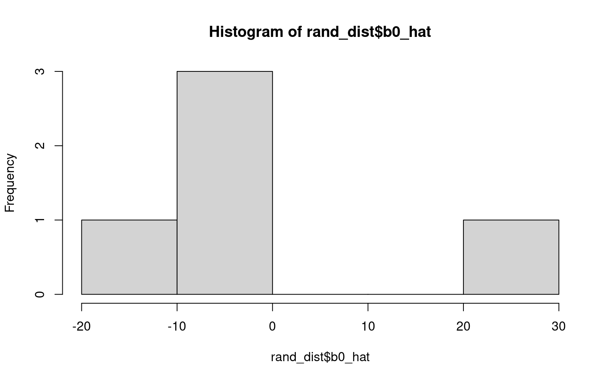
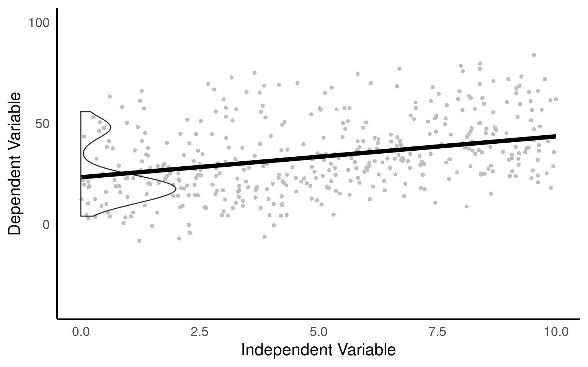

28 Foundations of Mixed Modelling
28.1 Introduction
So far all of our analyses have dealt with a few explanatory variables - referred to as fixed effects. In these examples one of our core assumptions was the independence of each data point. That is no two observations are linked, or in any way part of a subgroup or block effect.
However, there are many occasions where this might not be the case:
We make multiple/repeated measures on a single individual or group of individuals
We repeat an experiment in different areas or times
Samples processed in batches (on different days or machines etc.)
Paired or matched designs
Each of these break the assumption of independence in a standard linear model.
Sometimes we might know exactly how these blocks of data differ, on other occasions we may have little idea how or why they differ. But when we use a mixed model we can attempt to capture and account for this non-independence.
28.2 What is a mixed model?
Mixed models (also known as linear mixed models or hierarchical linear models) are statistical tests that build on the simpler tests of regression, t-tests and ANOVA. All of these tests are special cases of the general linear model; they all fit a straight line to data to explain variance in a systematic way.
The key difference with a linear mixed-effects model is the inclusion of random effects - alongside fixed effects.
28.2.1 Fixed and Random effects
Fixed effects: are parameters associated with specific, non-random levels of a factor. You estimate a separate coefficient for each level (or contrast) and make inferences about those specific levels. They’re treated as systematic, not varying by chance.
Random effects: are modeled as draws from a probability distribution, typically assumed to be Normal with mean zero and an estimated variance component. Instead of estimating a separate coefficient for each group, the model estimates the variance of the distribution from which those group effects are drawn. You’re not interested in the specific group effects per se, but in how much they vary around a population mean.
NoteRandom effects
The random effect \(U_i\) is often assumed to follow a normal distribution with a mean of zero and a variance estimated during the model fitting process.
\[Y_i = β_0 + U_j + ε_i\] Defining what a random effect actually is is tricky. The key practical distinction is how they are treated in mixed models.
In the book “Data analysis using regression and multilevel/hierarchical models” By Gelman Hill 2006. The authors examined five definitions of fixed and random effects and found no consistent agreement.
Fixed effects are constant across individuals, and random effects vary. For example, in a growth study, a model with random intercepts a_i and fixed slope b corresponds to parallel lines for different individuals i, or the model y_it = a_i + b t thus distinguish between fixed and random coefficients.
Effects are fixed if they are interesting in themselves or random if there is interest in the underlying population.
“When a sample exhausts the population, the corresponding variable is fixed; when the sample is a small (i.e., negligible) part of the population the corresponding variable is random.”
“If an effect is assumed to be a realized value of a random variable, it is called a random effect.”
Fixed effects are estimated using least squares (or, more generally, maximum likelihood) and random effects are estimated with shrinkage.
Thus it turns out fixed and random effects are not born but made. We must make the decision to treat a variable as fixed or random in a particular analysis.
Warning> 5 levels for random effects
Note that the golden rule is that you generally want your random effect to have at least five levels. So, for instance, if we wanted to control for the effects of fish sex on body length, we would fit sex (a two level factor: male or female) as a fixed, not random, effect.
This is because estimating variance on few data points is very imprecise. Mathematically you could, but you wouldn’t have a lot of confidence in it. If you only have two or three levels, the model will struggle to partition the variance - it will give you an output, but not necessarily one you can trust.
There’s no firm rule as to what the minimum number of factor levels should be for random effect. It is commonly reported that you may want five or more factor levels for a random effect in order to really benefit from what the random effect can do (though some argue for even more, 10 levels).
28.3 Using random effects
Random effects are usually grouping factors for which we are trying to control. They are always categorical, as you can’t force R to treat a continuous variable as a random effect. A lot of the time we are not specifically interested in their impact on the response variable, but we know that they might be influencing the patterns we see.
The mixed-effects model can be used in many situations instead of one of our more straightforward tests when this structure may be important. The main advantages of this approach are:
mixed-effects models account for more of the variance
mixed-effects models incorporate group and even individual-level differences
mixed-effects models cope well with missing data, unequal group sizes and repeated measurements
NoteOverdispersion
Another application of mixed models is to account for overdispersion in fixed-dipsersion models (Poisson and Binomial). If a random effect is included to account for individual-level variation we may find our models have a better fit.
28.4 Making a mixed models
28.4.1 The data
This dataset represents results from replicate feeding experiments investigating how Spodoptera frugiperda larvae respond to increasing concentrations of a plant defensive compound.
The explanatory variable is the concentration of the benzoxazinoid DIMBOA incorporated into the larval diet (mM)
The response variable y is a composite detoxification index combining cytochrome P450 and glutathione S-transferase activity together with expression of a marker detoxification gene.
Each group corresponds to an independent experimental replicate—separate batches of larvae reared and assayed under identical conditions on different days—to capture between-replicate variation in baseline activity and toxin responsiveness.
28.4.2 All in one model
We will begin by highlighting the importance of considering data structure and hierarchy when building linear models. To illustrate this, we will delve into an example that showcases the consequences of ignoring the underlying data structure. We might naively construct a single linear model that ignores the group-level variation and treats all observations as independent. This oversimplified approach fails to account for the fact that observations within groups may be more similar to each other.
\[Y_i = \beta_0 + \beta_1X_i + \epsilon_i\]
Call:
lm(formula = detox_exp ~ benzo_um, data = benzo_data)
Residuals:
Min 1Q Median 3Q Max
-37.23 -12.11 -2.36 11.00 44.53
Coefficients:
Estimate Std. Error t value Pr(>|t|)
(Intercept) 21.0546 1.6490 12.768 <2e-16 ***
benzo_um 2.5782 0.2854 9.034 <2e-16 ***
---
Signif. codes: 0 '***' 0.001 '**' 0.01 '*' 0.05 '.' 0.1 ' ' 1
Residual standard error: 16.96 on 428 degrees of freedom
Multiple R-squared: 0.1602, Adjusted R-squared: 0.1582
F-statistic: 81.62 on 1 and 428 DF, p-value: < 2.2e-16Here we can see that the basic linear model has produced a statistically significant regression analysis (t428 = 9.034, p <0.001) with an \(R^2\) of 0.16. There is a medium effect positive relationship between changes in x and y (Estimate = 2.58, S.E. = 0.29).
We can see that clearly if we produce a simple plot of x against y:
Here if we use the function geom_smooth() on the scatter plot, the plot also includes a fitted regression line obtained using the lm method. This allows us to examine the overall trend and potential linear association between the variables.

Looking at the fit of our model we would be tempted to conclude that we have an accurate and robust model.
However, when data is structured, such as individuals nested within groups, there is typically correlation or similarity among observations within the same group. By not accounting for this clustering effect, estimates derived from a single model can be biased and inefficient. The assumption of independence among observations is violated, leading to incorrect standard errors and inflated significance levels.
From the figures below we can see the difference in median and range of x values within each of our groups:
Visualise the groups
- Make a simple ggplot that highlights the differences between the groups.
Hint try boxplots for average difference between groups or colour the original scatterplot by group


From the above plots, it confirms that our observations from within each of the ranges aren’t independent. We can’t ignore that: as it might make our estimates biased.
28.4.3 Multiple analyses approach
Running separate linear models per group, also known as stratified analysis, could a feasible approach in certain situations. However, there are several drawbacks including
Increased complexity
Inability to draw direct conclusions on overall variability
Reduced statistical power
Inflated Type 1 error risk
Inconsistent estimates
Limited ability to handle unbalanced/missing data
# Plotting the relationship between x and y with group-level smoothing
ggplot(benzo_data, aes(x = benzo_um, y = detox_exp, color = group, group = group)) +
geom_point(alpha = 0.6) + # Scatter plot of x and y with transparency
labs(title = "Data Colored by Group", x = "Toxin concentration in diet",
y = "Detox capacity index") +
theme(legend.position = "none") +
geom_smooth(method = "lm") + # Group-level linear regression smoothing
facet_wrap(~group) # Faceting the plot by group
## Custom function to make pretty p-reporting
report_p <- function(p, digits = 3) {
reported <- if_else(p < 0.001,
"p < 0.001",
paste("p=", round(p, digits)))
return(reported)
}
# Creating nested benzo_data by grouping the benzo_data by 'group'
nested_data <- benzo_data |>
group_by(group) |>
nest()
# Fitting linear regression models to each nested data group
models <- map(nested_data$data, ~ lm(detox_exp ~ benzo_um, data = .)) |>
map(broom::tidy)
# Combining the model results into a single data frame
combined_models <- bind_rows(models)
# Filtering the rows to include only the 'x' predictor
filtered_models <- combined_models |>
filter(term == "benzo_um")
# Adding a column for the group index using rowid_to_column function
group_indexed_models <- filtered_models |>
rowid_to_column("group")
# Modifying the p-values using a custom function report_p
final_models <- group_indexed_models |>
mutate(p.value = report_p(p.value))
final_models| group | term | estimate | std.error | statistic | p.value |
|---|---|---|---|---|---|
| 1 | benzo_um | 3.0643940 | 0.3620254 | 8.4645823 | p < 0.001 |
| 2 | benzo_um | 2.5162898 | 0.3354848 | 7.5004590 | p < 0.001 |
| 3 | benzo_um | 1.3904720 | 0.3192878 | 4.3549169 | p < 0.001 |
| 4 | benzo_um | 1.6856649 | 0.3550511 | 4.7476686 | p < 0.001 |
| 5 | benzo_um | -0.0755633 | 0.6576868 | -0.1148926 | p= 0.909 |
Each analysis has produced a different estimate - and in some cases we did not find a statistically significant association.
28.4.4 Fixed effects model
Using a group level term with an effect on x as a fixed effect means explicitly including the terms benzo_um and the group as a predictors in the model equation. This approach assumes that the relationship between x and the outcome variable differs across groups and that these differences are constant and fixed.
It implies that each group has a unique intercept (baseline level) for the relationship between x and the outcome variable. By treating the group level term as a fixed effect, the model estimates specific parameter values for each group.
\[Y_i = \beta_0 + \beta_1X_i + \beta_2.group_i+\beta_3(X_i.group_i)+\epsilon_i\]
28.4.4.1 Include group as a fixed effect in your model
Call:
lm(formula = detox_exp ~ benzo_um + group, data = benzo_data)
Residuals:
Min 1Q Median 3Q Max
-26.3011 -6.3665 -0.3373 6.6295 31.5816
Coefficients:
Estimate Std. Error t value Pr(>|t|)
(Intercept) 11.7808 1.2931 9.111 < 2e-16 ***
benzo_um 2.0242 0.1704 11.883 < 2e-16 ***
group2 3.8771 1.4214 2.728 0.006642 **
group3 36.3036 1.4286 25.412 < 2e-16 ***
group4 9.2323 1.4215 6.495 2.33e-10 ***
group5 8.0609 2.0922 3.853 0.000135 ***
---
Signif. codes: 0 '***' 0.001 '**' 0.01 '*' 0.05 '.' 0.1 ' ' 1
Residual standard error: 10.05 on 424 degrees of freedom
Multiple R-squared: 0.7077, Adjusted R-squared: 0.7042
F-statistic: 205.3 on 5 and 424 DF, p-value: < 2.2e-16If each group has
reasonably large sample sizes
a balanced design (same n per group)
relatively consistent group differences
when you have few groups (<5)
Then the difference between a fixed-effect model and a mixed-effect model will be small. And this may be the preferred option.
BUT
When replicate experiments vary in n
When you want to generalise across groups
When you have lots of groups (> 5 - 10)
When you have incomplete groups or timepoints
Then mixed models can be much more powerful.
28.5 Our first mixed model
A mixed model is a good choice here: it will allow us to use all the data we have (higher sample size) and account for the correlations between data coming from the groups. We will also estimate fewer parameters and avoid problems with multiple comparisons that we would encounter while using separate regressions.
We can now join our random effect \(U_j\) to the full dataset and define our y values as
\[Y_{ij} = β_0 + β_1*X_{ij} + U_j + ε_{ij}\].
We have a response variable, and we are attempting to explain part of the variation through fitting an independent variable as a fixed effect. But the response variable has some residual variation (i.e. unexplained variation) associated with group. By using random effects, we are modeling that unexplained variation through variance.
We now want to know if an association between y ~ x exists after controlling for the variation in group.
28.5.1 Running mixed effects models with lmerTest
This section will detail how to run mixed models with the lmer function in the R package lmerTest (Kuznetsova et al. (2020)). There are other R packages that can be used to run mixed-effects models such as the glmmTMB package.
plot_function2 <- function(model, data, title = "Data Coloured by Group"){
data <- data |>
mutate(fit.m = predict(model, re.form = NA),
fit.c = predict(model, re.form = NULL))
data |>
ggplot(aes(x = x, y = y, col = group)) +
geom_point(pch = 16, alpha = 0.6) +
geom_line(aes(y = fit.c, col = group), linewidth = 2) +
coord_cartesian(ylim = c(-40, 100))+
labs(title = title,
x = "Independent Variable",
y = "Dependent Variable")
}
mixed_model <- lmer(y ~ x + (1|group), data = data)
plot_function2(mixed_model,benzo_data, "Random intercept")
Here we fit our random intercepts with (1|random_effect_variable).
Linear mixed model fit by REML. t-tests use Satterthwaite's method [
lmerModLmerTest]
Formula: detox_exp ~ benzo_um + (1 | group)
Data: benzo_data
REML criterion at convergence: 3224.4
Scaled residuals:
Min 1Q Median 3Q Max
-2.61968 -0.63654 -0.03584 0.66113 3.13597
Random effects:
Groups Name Variance Std.Dev.
group (Intercept) 205 14.32
Residual 101 10.05
Number of obs: 430, groups: group, 5
Fixed effects:
Estimate Std. Error df t value Pr(>|t|)
(Intercept) 23.2692 6.4818 4.1570 3.59 0.0215 *
benzo_um 2.0271 0.1703 424.0815 11.90 <2e-16 ***
---
Signif. codes: 0 '***' 0.001 '**' 0.01 '*' 0.05 '.' 0.1 ' ' 1
Correlation of Fixed Effects:
(Intr)
benzo_um -0.131Here our groups clearly explain a lot of variance
205/(205 + 101) = 0.669 / 66.9%
So the differences between groups explain ~67% of the variance that’s “left over” after the variance explained by our fixed effects.
28.5.2 Standard Errors
Below we can take a look at the estimates and standard errors for three of our previously constructed models:
pooled <- basic_model |>
broom::tidy() |>
mutate(Approach = "Pooled", .before = 1) |>
dplyr::select(term, estimate, std.error, Approach)
no_pool <- additive_model |>
broom::tidy() |>
mutate(Approach = "Fixed Effect", .before = 1) |>
dplyr::select(term, estimate, std.error, Approach)
partial_pool <- mixed_model |>
broom.mixed::tidy() |>
mutate(Approach = "Mixed Model", .before = 1) |>
dplyr::select(Approach, term, estimate, std.error)
bind_rows(pooled, no_pool, partial_pool) |>
filter(term %in% c("(Intercept)", "benzo_um"))| term | estimate | std.error | Approach |
|---|---|---|---|
| (Intercept) | 21.054614 | 1.6490185 | Pooled |
| benzo_um | 2.578217 | 0.2853798 | Pooled |
| (Intercept) | 11.780827 | 1.2931031 | Fixed Effect |
| benzo_um | 2.024207 | 0.1703505 | Fixed Effect |
| (Intercept) | 23.269187 | 6.4818211 | Mixed Model |
| benzo_um | 2.027065 | 0.1703423 | Mixed Model |
Pooled: in the pooled model the averaged estimates may not accurately reflect the true values within each group. As a result, the estimates in pooled models can be biased towards the average behavior across all groups. We can see this in the too small standard error of the intercept, underestimating the variance in our dataset. At the same time if there is substantial variability in the relationships between groups, the pooled estimates can be less precise. This increased variability across groups can contribute to larger standard errors of the difference (SED) for fixed effects in pooled models.
Fixed effect: This model is extremely precise with the smallest errors, however these estimates reflect conditions only for the first group in the model.
Mixed models: this model reflects the greater uncertainty of the Mean and SE of the intercept. However, the SED in a partial pooling model accounts for both the variability within groups and the uncertainty between groups. This adjusted SED provides a more accurate measure of the uncertainty associated with the estimated differences between groups or fixed effects.
28.6 Predictions
It’s not always easy/straightforward to make prediciton or confidence intervals from complex general and generalized linear mixed models, luckily there are some excellent R packages that will do this for us.
28.6.1 ggpredict
The argument type = random in the ggpredict function (from the ggeffects package Lüdecke (2025a)) is used to specify the type of predictions to be generated in the context of mixed effects models. The main difference between using ggpredict with and without type = random lies in the type of predictions produced:
type = fixed: ggpredict will generate fixed-effects predictions. These estimates are based solely on the fixed effects of the model, ignoring any variability associated with the random effects. The resulting estimate represent the average or expected values of the response variable for specific combinations of predictor values, considering only the fixed components of the model.
With type = random: ggpredict will generate predictions that incorporate both fixed and random effects. These predictions take into account the variability introduced by the random effects in the model. The resulting predictions reflect not only the average trend captured by the fixed effects but also the additional variability associated with the random effects at different levels of the grouping factor(s).
28.6.2 sjPlot
Another way to visualise mixed model results is with the package sjPlot(Lüdecke (2025b)), and if you are interested in showing the variation among levels of your random effects, you can plot the departure from the overall model estimate for intercepts - and slopes, if you have a random slope model:

Warning
The values you see are NOT actual values, but rather the difference between the general intercept or slope value found in your model summary and the estimate for this specific level of random/fixed effect.
sjPlot is also capable of producing prediction plots in the same way as ggeffects:
28.6.3 emmeans
Emmeans will only produce predictions based on fixed effects:
benzo_um emmean SE df lower.CL upper.CL
0 23.3 6.48 4.14 5.51 41.0
2 27.3 6.45 4.05 9.51 45.1
4 31.4 6.43 4.01 13.54 49.2
6 35.4 6.43 4.01 17.59 53.3
8 39.5 6.45 4.05 21.68 57.3
10 43.5 6.48 4.14 25.78 61.3
Degrees-of-freedom method: kenward-roger
Confidence level used: 0.95
NoteDegrees of freedom
In mixed models, df are not straightforward because of:
The hierarchical structure (e.g., subjects nested in groups),
Random effects, which reduce the effective number of independent observations.
| Method | What it does | Used by |
|---|---|---|
| Satterthwaite | Estimates df based on uncertainty in SE |
lmerTest, emmeans()
|
| Kenward-Roger | More advanced, adjusts SE and df | emmeans() |
| Asymptotic (∞) | Assumes large sample, uses normal distribution |
lme4, ggpredict()
|
When df is assumed to be essentially infinite (∞) - we default to the z-distribution, which will produce the narrowest confidence intervals.
28.6.4 Interval types
28.6.4.1 Confidence Intervals:
A confidence interval is used to estimate the range of plausible values for a population parameter, such as the mean or the regression coefficient, based on a sample from that population. It provides a range within which the true population parameter is likely to fall with a certain level of confidence. For example, a 95% confidence interval implies that if we were to repeat the sampling process many times, 95% of the resulting intervals would contain the true population mean.
| x | predicted | std.error | conf.low | conf.high | group |
|---|---|---|---|---|---|
| 0 | 23.26919 | 6.481821 | 10.52885 | 36.00952 | 1 |
| 2 | 27.32332 | 6.446136 | 14.65313 | 39.99351 | 1 |
| 4 | 31.37745 | 6.428332 | 18.74225 | 44.01265 | 1 |
| 6 | 35.43158 | 6.428560 | 22.79594 | 48.06722 | 1 |
| 8 | 39.48571 | 6.446816 | 26.81418 | 52.15724 | 1 |
| 10 | 43.53984 | 6.482949 | 30.79729 | 56.28239 | 1 |
28.6.4.2 Prediction Intervals:
On the other hand, a prediction interval is used to estimate the range of plausible values for an individual observation or a future observation from the population. It takes into account both the uncertainty in the estimated model parameters and the inherent variability within the data. A 95% prediction interval provides a range within which a specific observed or predicted value is likely to fall with a certain level of confidence. The wider the prediction interval, the greater the uncertainty around the specific value being predicted.
| x | predicted | std.error | conf.low | conf.high | group |
|---|---|---|---|---|---|
| 0 | 23.26919 | 11.95906 | -0.2369238 | 46.77530 | 1 |
| 2 | 27.32332 | 11.93976 | 3.8551499 | 50.79149 | 1 |
| 4 | 31.37745 | 11.93015 | 7.9281549 | 54.82674 | 1 |
| 6 | 35.43158 | 11.93028 | 11.9820450 | 58.88111 | 1 |
| 8 | 39.48571 | 11.94012 | 16.0168209 | 62.95460 | 1 |
| 10 | 43.53984 | 11.95967 | 20.0325298 | 67.04715 | 1 |
28.7 Checking model assumptions
28.7.1 performance
The check_model() function from the performance package in R is a useful tool for evaluating the performance and assumptions of a statistical model, particularly in the context of mixed models. It provides a comprehensive set of diagnostics and visualizations to assess the model’s fit, identify potential issues, and verify the assumptions underlying the model, which can be difficult with complex models
Note this package requires Hartig (2024) to work with simulated residuals for mixed model checking
28.8 Reporting Mixed Model Results
Once you get your model, you have to present it in an accurate, clear and attractive form.
The summary() function provides us with some useful numbers such as the amount of variance left over after fitting our fixed effects that can be assigned to each of our random effects. It also provides information on how correlated our random effects are, which may be of interest in understanding the structure of our data as well.
We can use it to check that the modelled random effect structure matches our data.
It includes the coefficient estimates, t-statistics and p-values of our fixed effects
Linear mixed model fit by REML. t-tests use Satterthwaite's method [
lmerModLmerTest]
Formula: detox_exp ~ benzo_um + (1 | group)
Data: benzo_data
REML criterion at convergence: 3224.4
Scaled residuals:
Min 1Q Median 3Q Max
-2.61968 -0.63654 -0.03584 0.66113 3.13597
Random effects:
Groups Name Variance Std.Dev.
group (Intercept) 205 14.32
Residual 101 10.05
Number of obs: 430, groups: group, 5
Fixed effects:
Estimate Std. Error df t value Pr(>|t|)
(Intercept) 23.2692 6.4818 4.1570 3.59 0.0215 *
benzo_um 2.0271 0.1703 424.0815 11.90 <2e-16 ***
---
Signif. codes: 0 '***' 0.001 '**' 0.01 '*' 0.05 '.' 0.1 ' ' 1
Correlation of Fixed Effects:
(Intr)
benzo_um -0.131We may also wish to report \(R^2\) values from our model fit. This requires the MuMIn package.
This calculates two values the first \(R^2_{m}\) is the marginal \(R^2\) value, representing the proportion of variance explained by our fixed effects. The second \(R^2_{c}\) is the conditional \(R^2\), which is the proportion of variance explained by the full model, with both fixed and random effects.
28.9 Tables
There are a few packages for producing beautiful summary tables from regression models, but not all of them can handle mixed-effects models, the sjPlot Lüdecke (2025b) package is one of the most robust and produces a simple HTML table detailing fixed and random effects, produces 95% confidence intervals for fixed effects and calculates those \(R^2\) values for you:
28.10 Figures
We have covered some of the packages that allow us to easily produce marginal and conditional fits, along with 95% confidence or prediction intervals: these will output ggplot2 figures, allowing plenty of customisation for presentation

28.11 Write-ups
We fitted a linear mixed model (estimated using REML) to estimate the effect of “benzo_um” on “detox_exp”. The model included a random intercept design to allow for the repeated experiment design. The model’s total explanatory power is substantial (conditional R^2 = 0.7), and the part related to the fixed effects alone (marginal R2) is 0.099. The effect of x on y was a steady increase of 2.03 per unit of x ([1.69 - 2.36], t(424.1) = 11.9, p < 0.001). These 95% Confidence Intervals (CIs) and p-values were computed using a satterthwaite approximation of the degrees of freedom and a t-distribution approximation.
28.12 Practice Questions
- In mixed-effects models, independent variables are also called:
- A random effect is best described as?
- Which of the following is not an advantage of mixed-effects models?
- Mixed-effects models cope well with missing data because?
28.13 Worked Example 1 - Dolphins
28.13.1 How do I decide if it is a fixed or random effect?
One of the most common questions in mixed-effects modelling is how to decide if an effect should be considered as fixed or random. This can be quite a complicated question, as we have touched upon briefly before the definition of a random effect is not universal. It is a considered process that can include the hypothesis or question you are asking.
1 ) Are you directly interested in the effect in question. If the answer is yes it should be a fixed effect.
2 ) Is the variable continuous? If the answer is yes it should be a fixed effect.
3 ) Does the variable have less than five levels? If ther answer is yes it should be a fixed effect.
28.14 Dolphins
This dataset was collected to measure resting lung function in 32 bottlenose dolphins. The main dependent variable was the tidal volume (\(V_T\)) measured in litres, as an index of lung capacity.
Here we are interested in the relationship between (\(V_T\)) and body mass (kg), we have measurements which are taken on the breath in and the breath out, and each dolphin has been observed between one and four times.
We need to determine our fixed effects, random effects and model structure:
Body Mass
Direction
Animal 1) Body Mass
With the basic structure
y ~ x + z + (1|group)what do you think this model should be?:
We are clearly interested in the effect of body mass on (\(V_T\)) so this is a fixed effect.
We may think that the relationship with (\(V_T\)) and body mass may be different on the in and out breath. We may not be directly interested in this, but it has fewer than fivel levels so this is a fixed effect. (outbreath coded as 1, inbreath coded as 2).
Individual dolphins - if we averaged across measurements for each dolphin, our measurement precision would be different for each animal. If we include each data point, we would be double-counting some animals and our observations would not be independent. To account for the multiple observations we should treat animal as a random effect.
With our basic linear model in place - we should carry out model fit checks with DHARMa or performance::check_model(), but assuming this is a good fit we can look at interpretation:
Linear mixed model fit by REML. t-tests use Satterthwaite's method [
lmerModLmerTest]
Formula: vt ~ bodymass + direction + (1 | animal)
Data: dolphins
REML criterion at convergence: 387.4
Scaled residuals:
Min 1Q Median 3Q Max
-2.30795 -0.51983 0.04156 0.62404 2.26396
Random effects:
Groups Name Variance Std.Dev.
animal (Intercept) 1.039 1.019
Residual 1.158 1.076
Number of obs: 112, groups: animal, 31
Fixed effects:
Estimate Std. Error df t value Pr(>|t|)
(Intercept) 2.226398 0.627115 28.758081 3.550 0.00135 **
bodymass 0.016782 0.003259 26.720390 5.150 2.1e-05 ***
direction2 1.114821 0.203389 77.414421 5.481 5.1e-07 ***
---
Signif. codes: 0 '***' 0.001 '**' 0.01 '*' 0.05 '.' 0.1 ' ' 1
Correlation of Fixed Effects:
(Intr) bdymss
bodymass -0.927
direction2 -0.162 0.000

We fitted a linear mixed model (estimated using REML and nloptwrap optimizer) to predict (\(V_T\)) with bodymass(kg) and direction (in/out breath). 95% Confidence Intervals (CIs) and p-values were computed using a Wald t-distribution approximation. We included a random intercept effect of animal to account for repeated measurements (of between 1 to 4 observations) across a total of 32 bottlenosed dolphins.
We found that for every 1kg increase in bodymass, (\(V_T\)) increased by 0.02 litres (95% CI [0.01 - 0.02]), . The inbreath had on average a higher volume than the outbreath (1.11 litre difference [0.71 - 1.52]..
Q. This is not a perfect write-up, what else could we consider including?
28.15 Multiple random effects
Previously we used (1|group) to fit our random effect. Whatever is on the right side of the | operator is a factor and referred to as a “grouping factor” for the term.
28.15.1 Crossed or Nested
When we have more than one possible random effect these can be crossed or nested - it depends on the relationship between the variables. Let’s have a look.
A common issue that causes confusion is this issue of specifying random effects as either ‘crossed’ or ‘nested’. In reality, the way you specify your random effects will be determined by your experimental or sampling design. A simple example can illustrate the difference.
28.15.1.1 1. Crossed Random Effects:
Crossed random effects occur when the levels of two or more grouping variables are crossed or independent of each other. In this case, the grouping variables are unrelated, and each combination of levels is represented in the data.
Fully Crossed
Example: Imagine there is a long-term study on breeding success in passerine birds across multiple woodlands, and the researcher returns every year for five years to carry out measurements. Here “Year” is a crossed random effect with “Woodland” as each Woodland can appear in multiple years of study. Imagine a researcher was interested in understanding the factors affecting the clutch mass of a passerine bird. They have a study population spread across five separate woodlands, each containing 30 nest boxes. Every week during breeding they measure the foraging rate of females at feeders, and measure their subsequent clutch mass. Some females have multiple clutches in a season and contribute multiple data points.
lmer(y ~ x + (1 | Year) + (1 | Woodland), data = dataset)
28.15.1.2 2. Nested Random Effects:
Nested random effects occur when the levels of one grouping variable are completely nested within the levels of another grouping variable. In other words, the levels of one variable are uniquely and exclusively associated with specific levels of another variable.
Fully Nested
Example: In the same bird study female ID is said to be nested within woodland : each woodland contains multiple females unique to that woodland (that never move among woodlands). The nested random effect controls for the fact that (i) clutches from the same female are not independent, and (ii) females from the same woodland may have clutch masses more similar to one another than to females from other woodlands
lmer(y ~ x + (1 | Woodland/Female ID), data = dataset)
or if we remember year we have a model with both crossed and nested random effects
lmer(y ~ x + (1 | Woodland/Female ID) + (1|Year), data = dataset)
For more on designing models around crossed and nested designs check out this amazing nature paper
28.16 Worked Example 2 - Nested design
This experiment involved a simple one-way anova with 3 treatments given to 6 rats, the researchers the measured glycogen levels in their liver. The analysis was complicated by the fact that three preparations were taken from the liver of each rat, and two readings of glycogen content were taken from each preparation. This generated 6 pseudoreplicates per rat to give a total of 36 readings in all.
Clearly, it would be a mistake to analyse these data as if they were a straightforward one-way anova, because that would give us 33 degrees of freedom for error. In fact, since there are only two rats in each treatment, we have only one degree of freedom per treatment, giving a total of 3 d.f. for error.
The variance is likely to be different at each level of this nested analysis because:
the readings differ because of variation in the glycogen detection method within each liver sample (measurement error); the pieces of liver may differ because of heterogeneity in the distribution of glycogen within the liver of a single rat; the rats will differ from one another in their glycogen levels because of sex, age, size, genotype, etc.; rats allocated different experimental treatments may differ as a result of the fixed effects of treatment. If all we want to test is whether the experimental treatments have affected the glycogen levels, then we are not interested in liver bits within rat’s livers, or in preparations within liver bits. We could combine all the pseudoreplicates together, and analyse the 6 averages. This would have the virtue of showing what a tiny experiment this really was. This latter approach also ignores the nested sources of uncertainties. Instead we will use a linear mixed model.
Glycogen Rat Treatment Liver
1 131 1 1 1
2 130 1 1 1
3 131 1 1 2
4 125 1 1 2
5 136 1 1 3
6 142 1 1 3
7 150 2 1 1
8 148 2 1 1
9 140 2 1 2
10 143 2 1 2
11 160 2 1 3
12 150 2 1 3
13 157 3 2 1
14 145 3 2 1
15 154 3 2 2
16 142 3 2 2
17 147 3 2 3
18 153 3 2 3
19 151 4 2 1
20 155 4 2 1
21 147 4 2 2
22 147 4 2 2
23 162 4 2 3
24 152 4 2 3
25 134 5 3 1
26 125 5 3 1
27 138 5 3 2
28 138 5 3 2
29 135 5 3 3
30 136 5 3 3
31 138 6 3 1
32 140 6 3 1
33 139 6 3 2
34 138 6 3 2
35 134 6 3 3
36 127 6 3 3
Linear mixed model fit by REML. t-tests use Satterthwaite's method [
lmerModLmerTest]
Formula: Glycogen ~ Treatment + (1 | Rat) + (1 | Liver)
Data: rats
REML criterion at convergence: 221.9
Scaled residuals:
Min 1Q Median 3Q Max
-1.79334 -0.66536 0.01792 0.59281 2.05206
Random effects:
Groups Name Variance Std.Dev.
Rat (Intercept) 39.187 6.260
Liver (Intercept) 2.168 1.472
Residual 30.766 5.547
Number of obs: 36, groups: Rat, 6; Liver, 3
Fixed effects:
Estimate Std. Error df t value Pr(>|t|)
(Intercept) 140.500 4.783 3.174 29.373 5.65e-05 ***
Treatment2 10.500 6.657 3.000 1.577 0.213
Treatment3 -5.333 6.657 3.000 -0.801 0.482
---
Signif. codes: 0 '***' 0.001 '**' 0.01 '*' 0.05 '.' 0.1 ' ' 1
Correlation of Fixed Effects:
(Intr) Trtmn2
Treatment2 -0.696
Treatment3 -0.696 0.500Q. Why is this model above wrong
It is wrong because this would add two random effect terms, one for rat 1 and one for rat 2. In fact there are 6 rats altogether. The way that the data have been coded allows for these kinds of mistakes to happen. The same is true for Liver, which is coded as a 1, 2 or 3. This means that we could write this thinking that we are including the correct random effects for Rat and Liver. In fact, this assumes that the data come from a crossed design, in which there are 2 rats and 3 parts of the liver, and that Liver = 1 corresponds to the same type of measurement in rats 1 and 2 and so on. Sometimes this is appropriate, but not here!
The nature of the way that many data sets are coded makes these kinds of mistakes very easy to make!
A better design is the one below:
Linear mixed model fit by REML. t-tests use Satterthwaite's method [
lmerModLmerTest]
Formula: Glycogen ~ Treatment + (1 | Rat/Liver)
Data: rats
REML criterion at convergence: 219.6
Scaled residuals:
Min 1Q Median 3Q Max
-1.48212 -0.47263 0.03062 0.42934 1.82935
Random effects:
Groups Name Variance Std.Dev.
Liver:Rat (Intercept) 14.17 3.764
Rat (Intercept) 36.06 6.005
Residual 21.17 4.601
Number of obs: 36, groups: Liver:Rat, 18; Rat, 6
Fixed effects:
Estimate Std. Error df t value Pr(>|t|)
(Intercept) 140.500 4.707 3.000 29.848 8.26e-05 ***
Treatment2 10.500 6.657 3.000 1.577 0.213
Treatment3 -5.333 6.657 3.000 -0.801 0.482
---
Signif. codes: 0 '***' 0.001 '**' 0.01 '*' 0.05 '.' 0.1 ' ' 1
Correlation of Fixed Effects:
(Intr) Trtmn2
Treatment2 -0.707
Treatment3 -0.707 0.500And we can see the effects in the figures below:


28.17 Worked Example 3 - GLMM Binomial Mixed models
Fit a Binomial GLM
Read in this csv and assign it to an R object
egg_hatch_dataFit a Binomial model to analyse the hatch rate by treatment for the
egg_hatch_data
-
Look at the coefficients and run a model check on the data
- Are there any issues with the model?
Call:
glm(formula = cbind(number_of_larvae, unhatched_eggs) ~ cross,
family = binomial, data = egg_hatch_data)
Coefficients:
Estimate Std. Error z value Pr(>|z|)
(Intercept) 1.05143 0.04658 22.573 < 2e-16 ***
crossB 0.38815 0.09124 4.254 2.1e-05 ***
crossC 1.29224 0.11812 10.940 < 2e-16 ***
---
Signif. codes: 0 '***' 0.001 '**' 0.01 '*' 0.05 '.' 0.1 ' ' 1
(Dispersion parameter for binomial family taken to be 1)
Null deviance: 1307.6 on 54 degrees of freedom
Residual deviance: 1157.3 on 52 degrees of freedom
AIC: 1363.6
Number of Fisher Scoring iterations: 4
There are several issues with outliers, the distribution of quantiles, under-prediction of high values.
If we run a performance::check_overdispersion() we have high overdispersion
Fit a Binomial GLMM
Mixed models can be very helpful for dealing with apparent overdispersion in fixed dispersion models.
If variance can be accounted for by random intercepts that align with the structure in our data.
Which variables could be used to build random intercepts?
Do we need crossed or nested effects?
Use the
glmer()to fit a binomial model with random effects
glmer(cbind(win,loss) ~ x + (1|random), family = binomial)
binomial_mixed_rep <- glmer(cbind(number_of_larvae,unhatched_eggs) ~ cross +
(1|replicate),
family = binomial,
data = egg_hatch_data)
binomial_mixed_rep_fem <- glmer(cbind(number_of_larvae,unhatched_eggs) ~ cross +
(1|replicate/female_num),
family = binomial,
data = egg_hatch_data)
AIC(binomial_model, binomial_mixed_rep, binomial_mixed_rep_fem)| df | AIC | |
|---|---|---|
| binomial_model | 3 | 1363.551 |
| binomial_mixed_rep | 4 | 1263.221 |
| binomial_mixed_rep_fem | 5 | 644.059 |
In this example - our main source of variance was between different females - allowing for a random intercept here stabilised dispersion to within acceptable tolerances for a binomial model.
Variance between replicate experiments is actually extremely low - but female ids are nested within replicate experiments so this must be reflected in our random intercept structure.
Tip: Check the number of obs, and groups in the random effect summary - does it match your experimental design?
28.18 Summary
28.18.1 Checklist for Pooling vs. Fixed vs. Random Effects
-
Are the groups or replicates intentionally different (experimental manipulation)?
Yes → Fixed effect.
You want explicit estimates for each level (treatment A vs B, genotype 1 vs 2).No → Go to 2.
-
Are the groups/replicates randomly sampled from a broader population you want to generalize over?
Yes → Random effect.
Each level (e.g., plate, batch, cage) is a random draw; you want to estimate variance among levels, not each level’s mean.
Efficient when many levels; saves degrees of freedom.No → Go to 3.
-
Are the groups technically identical and under identical conditions?
- Yes → Pool results.
If variation among replicates is trivial or purely measurement error, averaging is acceptable.
Always verify that between-replicate variance is negligible before pooling.
- No → Go to 4.
- Yes → Pool results.
-
Do group differences represent a nuisance (not of direct interest but possibly confounding)?
Yes → Random effect (if ≥ 5 levels).
If only 2–3 levels → safer to model as Fixed, or combine with other factors.No → Go to 5.
-
Are there only a few levels (≤ 3)?
Yes → Fixed effect.
Variance estimation is unreliable with so few groups.No → Random effect (if sampled at random from a larger population).
-
Are you uncertain about which specification is appropriate?
- Fit both fixed and random models: compare AIC/BIC and model checks
28.18.1.1 Final Check
| Situation | Reasoning | Recommended Handling |
|---|---|---|
| Designed treatment differences | Specific levels of interest | Fixed effect |
| Randomly sampled groups (many levels) | Interested in variance, not per-level means | Random effect |
| Identical replicates, same conditions | No real grouping variance | Pool (average) |
| Few nuisance groups (≤ 3) | Random variance unidentifiable | Fixed effect |
| Unknown influence | Test both structures | Model comparison |
28.18.2 Practical problems
Below are two common issues or warnings you will likely encounter when fitting linear models:
boundary (singular) fit: see help('isSingular'): Your model did fit, but it generated that warning because some of your random effects are very small, common with complex mixed-effect models. You can read more about this in help page-
Convergence warnings: Values for the mixed-effects models are determined using optimisation algorithms. Sometimes these algorithms fail to converge on a best parameter estimate, which will produce an error. There are several possible solutions:
- Normalise and rescale: Rescaling the variables can mitigate issues caused by the differences in scales or magnitudes of the predictors, which can affect the optimization process. You can rescale the fixed effects predictors by subtracting the mean and dividing by the standard deviation. This centers the variables around zero and scales them to have a standard deviation of 1. This can be done using the scale() function in R.
- Try alternative optimisation algorithms:
lmer3 <- lmer(y ~ x + (x | group), data = data, control = lmerControl(optimizer ="Nelder_Mead"))- Finally, although it pains me to admit it, you should try running the model using a different package - each has their own unique and slightly different optimisation protocols.
28.19 Further Reading
Some essential reading to continue your mixed-model journey!